| The Sifted Vol.7: Episode 055-062 (Jp) (The BBB: Breakthrough Bandwagon Books) | |
| 秋月涼介 | |
| The BBB: Breakthrough Bandwagon Books (2019) | |
Originally written in Japanese and translated by Ryosuke Akizuki
Photographs by Ryosuke Akizuki
Cover design by Tanya
Copyright © 2018 Ryosuke Akizuki / The BBB: Breakthrough Bandwagon Books
All rights reserved.
ISBN: 978-0-359-28386-6
「The Sifted（ザ・シフティッド）」は、秋月涼介による連作ミステリー小説「The Gifted（ザ・ギフティッド）」シリーズのスピンオフ作品です。著者が実際に訪れた実在のレストランの特徴や魅力について、「The Gifted」の主要登場人物たちと語り合うグルメ・リポートとなっています。
「Gifted」は「能力者」、「Sifted」は「ふるいにかけられたもの」を、それぞれ意味しています。
合わせてお楽しみいただければ、幸いです。
名前：ミロ・バルツァ（Milo Baltsa）
性別：男
年齢：16歳
身長：168cm
瞳の色：碧
髪の色：白金
誕生日：3月5日
星座：魚座
血液型：AB型
職業：高校二年生
好きなもの：ラーメン
* * *
名前：サヤ・トウマ（Saya Touma）
性別：女
年齢：15歳
身長：164cm
瞳の色：濃い茶
髪の色：漆黒
誕生日：10月14日
星座：天秤座
血液型：O型
職業：高校一年生
好きなもの：甘い物全般
* * *
名前：クロエ・ディレク（Chloe Dyrek）
性別：女
年齢：24歳
身長：172cm
瞳の色：青
髪の色：明るい金
誕生日：9月2日
星座：乙女座
血液型：A型
職業：旅行社勤務
好きなもの：白ビール、イタリア料理、中華料理（特に点心）
* * *
名前：リカルド・アルバーニ（Riccardo Albani）
性別：男
年齢：32歳
身長：183cm
瞳の色：鳶色
髪の色：栗色
誕生日：10月23日
星座：天秤座
血液型：B型
職業：ソフトウェア会社勤務（プログラマ）
好きなもの：酒（特にワイン）、パスタ（特にカルボナーラ）
* * *
名前：ヨマ・フィアルカ（Yoma Fialka）
性別：女
年齢：15歳
身長：170cm
瞳の色：灰
髪の色：濃い金
誕生日：7月2日
星座：蟹座
血液型：A型
職業：祓魔師（エクソシスト）
好きなもの：カレー全般（特にインドカレー、タイカレー）
* * *
※年齢と身長は、The Gifted Vol.1時点のものです。
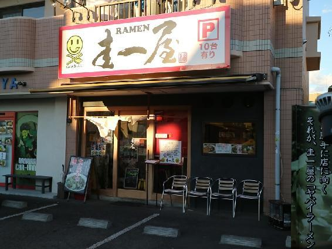
秋月「The Siftedの連載を始めてから、情報収集のために、色んなグルメ番組を観るようになったんだけど、この前、『バナナマンのせっかくグルメ！！』っていう番組が、小田原にロケに来てたみたいなんだよね。生で日村さん、観てみたかった......」
ミロ「気が付いたときには、もう放送の予告をしてたからね。それに、年末は忙しすぎて、家から出られなかったんじゃない？」
秋月「......そうなんだよね。もう、こんな機会は、二度と無いだろうなぁ。しかも、最近、遠出もできないから、お店の開拓も、あまり進んでなくて」
ミロ「そろそろ、お店のストックが底をつきそうなんじゃない？」
秋月「うん......。なので、今回から5エピソード分は、小田原で、日村さんがロケで行けなかったお店を紹介しようかな、と」
ミロ「リョウ、楽な方に逃げたね」
秋月「ひ、人聞きの悪いことを言わないでよ。今や人気観光地となりつつある小田原を盛り上げるためだよ」
ミロ「まあ、そういうことにしておいてあげるよ。じゃあ、まずは、ラーメン不毛の地、小田原のラーメン屋さんからだね」
秋月「『小田原城下らーめん宿場町』は、無くなっちゃったからなぁ......」
ミロ「それはさておき、今回は鴨宮駅にある『圭一屋』だね」
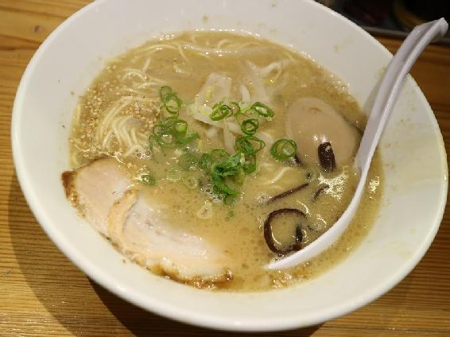
秋月「まずは、『トンコツラーメン（細麺）』からだね。お店は、小田原駅から東京方面に一駅行ったところにある鴨宮駅にあって、なおかつ、駅から1kmも離れているという立地なんだけど、並ばないと食べられないことがあるんだよね」
ミロ「このお店のラーメンは、色々食べてみたけど、個人的には、この『トンコツラーメン』が、一番好みかな。豚骨スープがどろっとしてて、博多の豚骨ラーメンに比べると、かなり濃厚だね。家系ラーメンの豚骨スープとも、ちょっと違ってて、独特な美味しさがある」
秋月「麺は細麺で、他にチャーシュー、木耳（きくらげ）なんかが載ってるんだけど、もう、このスープだけがあれば、幸せな感じだよね」
ミロ「このラーメンだけは、替え玉が一玉無料のサービスが付いてるんだけど、そういえば、替え玉を頼んだことが無いよね」
秋月「スープをぐいぐい飲んじゃうから、替え玉を入れる前にスープが無くなるからね。替え玉よりも、替えスープをくれって感じだよ。券売機に、『トンコツラーメン（麺抜き）』のボタンさえあれば......」
ミロ「そんな異常なボタンを押すのは、リョウくらいだね」
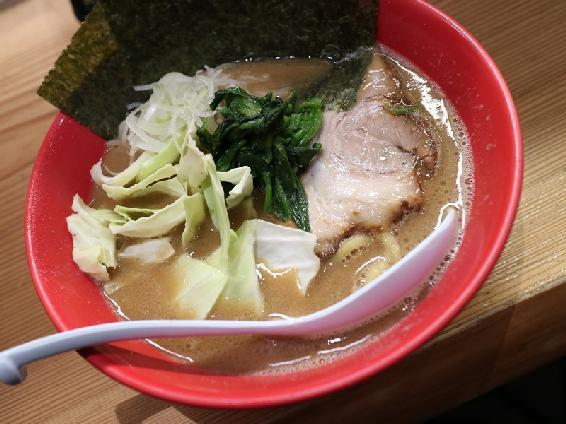
秋月「さて、次は、『ヤバいラーメン（豚骨醤油）』だね」
ミロ「このスープも、かなり濃厚で、こちらは、どちらかというと、家系の醤油豚骨の味に近い感じがするね」
秋月「人によっては、醤油味が、少し辛く感じられるかもしれない。麺も太麺だし、ほうれん草が載っているところをみると、家系ラーメンにインスパイアされてるのかも？」
ミロ「今回、ラーメンの写真を改めて撮るために久々に食べてみたけど、初めて食べたときの印象よりも、さらに美味しくなってる感じがしたね」
秋月「だとすると『つけ麺 濃厚魚介豚骨』や『味噌ヤバイ』も進化してるかも？ 鴨宮は近くて遠い場所だけど、また近い内に行きたいね」
ミロ「じゃあ、そろそろレビューも終わりの時間だけど、締めの台詞は？」
秋月「せっかく小田原に来たんならよぉ、圭一屋のヤバいラーメン食ってけ！」
ミロ「ところで、この台詞、勝手に使って、TBSから怒られないの？」
秋月「......ヤバいかも」
-The End-
■圭一屋
http://k-ichiya.com/
神奈川県小田原市西酒匂2-9-2
トンコツラーメン（細麺） 780円 ＋ 味つけ玉子 100円
ヤバいラーメン（豚骨醤油）800円
※この物語は半フィクションであり、実在の人物や団体、出来事などと、多少関係があります。
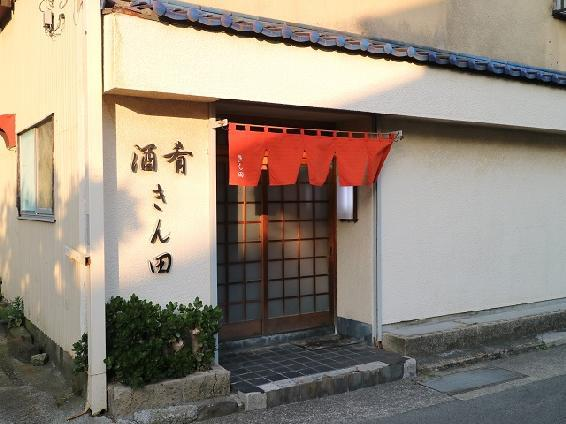
秋月「さて、今回は、小田原の和食のお店だね。色々、悩んだけど、新規開拓に挑んでみたよ」
サヤ「英語版の校了まで、二週間くらいしかないのに、新規開拓なんて危険すぎるよ」
秋月「安心・安全がモットーの私としては、これでも、かなりギリギリだったね......。こんなに追い詰められていたからこそ、今回は、一人割烹に挑戦してみたよ」
サヤ「あ、また、わたしのこと、忘れてる」
秋月「あ、そうか、二人割烹だった。ごめん、ごめん」
サヤ「いいの。わたしは影のようにリョウに付き添って、美味しいものを食べてるから」
秋月「なんだか、その言い方、『つきまとう女』みたいで怖いよ......」
サヤ「リカルドの『ジンクス』が効いてるから、わたしが憑いてると幸運がアップするよ」
秋月「そのお陰か、電話では緊張したけど、なんとか予約することができたね」
サヤ「......予約ができなかったら、和食の原稿は、どうなってたのかな？」
秋月「――というわけで、今回は、早川駅にある懐石・割烹のお店、『きん田』だね」
サヤ「段々、誤魔化すのが巧くなってない？」
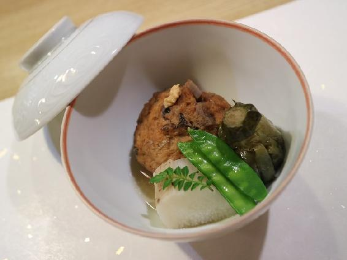
秋月「今回は、初めてということもあって、一番高い『おまかせ料理コース 8000円』にしてみたよ」
サヤ「初めてで、いきなり一番高いコースにしたの？」
秋月「お店の実力を測るには、一番高いもので味を確かめてみないとね」
サヤ「リョウが、そんなに優れた舌を持ってるとは思えないけど......」
秋月「はい、すみません。ちょっとだけ見栄を張ってみました......」
サヤ「コースの内容は、八寸、椀物、造り、焼物、焚合せ、蒸物、酢物、食事、水菓子といった感じかな？ 解説がほとんど無かったので、自己判断になっています」
秋月「さて、この中から、まず選んだのは、焚合せだね」
サヤ「飛竜頭（ひろうす）、茶筅茄子（ちゃせんなす）、長芋の焚合せね」
秋月「初めて知ったけど、飛竜頭は、がんもどきの関西での呼び名だね」
サヤ「この大ぶりな飛竜頭が美味しかったなぁ。中に何が入ってたのか判らないけど、散りばめられた蓮根の食感が良かったよね。お出汁も染み込んでいて、噛むとじゅわっと溢れてくるの」
秋月「茶筅茄子は、包丁で切れ目を入れて、茄子を茶筅のような形にする飾り切りだね。この茄子も、噛むと、ややピリッと辛いお汁が、ぶわっと、口一杯に溢れてきて、美味しい」
サヤ「他の二つは濃いめの味つけだけど、長芋は優しい味に仕上がってたよね」
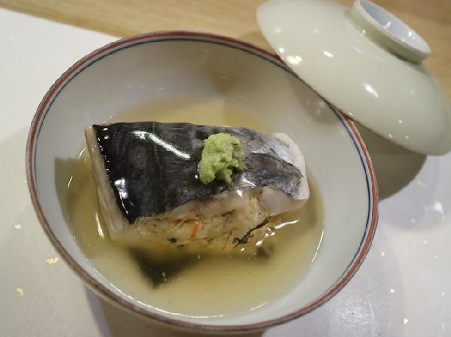
秋月「さて、お次は、蒸物の『鰆（さわら）の巻繊（けんちん）蒸し』だね」
サヤ「わたし、巻繊蒸しっていう料理は、初めて食べるかも」
秋月「豆腐を搾って、筍（たけのこ）、木耳（きくらげ）、玉子を入れて練り上げて、鰆の切り身に挟んで蒸し上げてある、手の込んだ料理だね」
サヤ「この玉子味の豆腐の甘みが絶妙だったよね。この豆腐だけを食べていても美味しいけど、鰆の身と脂と合わせて、さらに周りにある、ねっとりとした葛餡（くずあん）に山葵（わさび）を溶いて、合わせると、豆腐と鰆と葛餡が融合して、素敵な三重奏を奏でるの」
秋月「なんだか格好良く言ってるけど、味が伝わってないよ」
サヤ「ええ？ うーん、確かに言われてみれば......リョウにお手本が見せて欲しいかも」
秋月「下に昆布が敷いてあるから、グルタミン酸とイノシン酸とグアニル酸の旨味が、相乗効果を生み出して、この美味しさになってるんだよね」
サヤ「なんだか格好良く言ってるけど、それも味が伝わってないと思う」
秋月「味の表現って難しい......それはともかく、野菜や豆腐の味つけが良い店だったね」
サヤ「うんうん。あと八寸の鬼灯（ほおずき）や水菓子のメロンも美味しかったよね」
秋月「いや、それは、流石に調理されてないと思うけど......」
-The End-
■きん田
神奈川県小田原市早川208
おまかせ料理コース 8000円
※この物語は半フィクションであり、実在の人物や団体、出来事などと、多少関係があります。
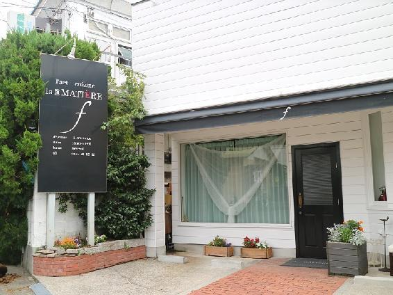
クロエ「そういや、あんた、今、小田原のグルメ特集をやってんだってな」
秋月「そうそう。小田原も、グルメ番組で取り上げられるようになってきたからね。クロエも、旅行社で小田原グルメツアーを組んでもいいんじゃない？」
クロエ「グルメは、ここで紹介するとして、他に何か、お勧めの観光地はあるのか？」
秋月「小田原城址公園とか？」
クロエ「定番だね。他に尊徳記念館とか、神奈川県立生命の星・地球博物館とか、小田原文学館とか、五百羅漢の玉宝寺とか、色々あるだろ？」
秋月「......実は、行ったことが無かったり」
クロエ「あんた、わりと近いのに、行ったことが無いのかよ」
秋月「近場ってさ、いつでも行けると思ってるから、なかなか行かないんだよ。伊豆とか、箱根だって、滅多に行かないし。クロエだって、シティの市庁舎とか、時計塔とか、市立美術館とか、クトロフィアーノ教会とか、滅多に行かないでしょ？」
クロエ「うっ、ま、まあな」
秋月「でも、レストランは、近場でも、どんどん行くよ。というわけで、今回は、小田原の城山にある『la MATIÈRE f』だね」
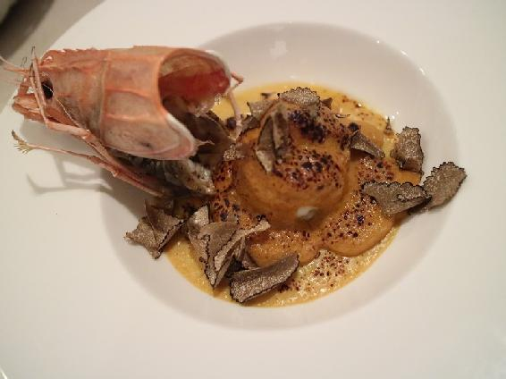
クロエ「このお店、メニューは、基本、おまかせコースしか無くて、ディナーは、4500円、6500円、8500円、12500円の四種類だね。今回は、前日までの予約で食べられる8500円のコースを選んでみた」
秋月「この日の『シェフのおまかせコース』は、前菜四皿、スープ、メイン魚、メイン肉、デザート二皿の計九皿に、パンとフィナンシェが付いてくるね。仕入れの状況で、皿数が多少前後することはあるみたいだね」
クロエ「じゃあ、いつものように、あたしが選んだ二皿は、前菜の一品とメインの肉だ。まずは、三皿目の前菜『手長海老のグラタンと唐黍（とうきび）のブラン』だね」
秋月「出て来た時に、皿から立ち昇る芳（かぐわ）しい薫りが良かったよねぇ。これ、手長海老？ っていうくらい大きい海老で、伊勢海老みたいだったね」
クロエ「この相模湾産の手長海老が――肉に甘味があって、海老の味がよく出てる。唐黍は、北海道産の恵みゴールドっていう品種で、さくさくした歯応えが良く、甘味がしっかりとあったね」
秋月「あと、薫りの高いオータムトリュフは、イタリア産だったね」
クロエ「グラタンのクリームと海老の肉、トリュフを一度に頬張ると、幸せすぎる......」
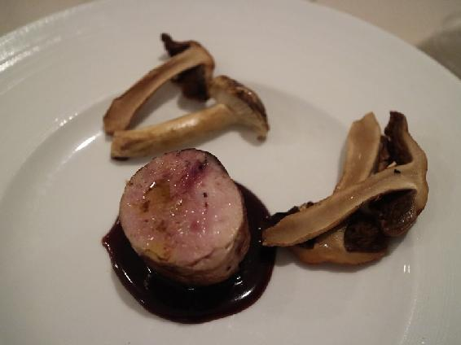
秋月「さて、お次は『ペルドローのファルス』だね。Wikiによると、一歳以下の山鶉（やまうずら）の若鳥をペルドローっていうらしい」
クロエ「鶉の肉と内臓、フォアグラが一緒に巻かれていて、同じ鶉から作った芳醇な赤ワインソースが添えてある。付け合わせは、炭火と松で薫り付けした天然の桜占地（さくらしめじ）と正源寺茸（しょうげんじだけ）だね」
秋月「内臓とフォアグラ部分の食感と、ねっとりした脂の濃い甘味が凄すぎる」
クロエ「口の中に広がる、あの濃厚さは、脂好きにはたまんないね。鶉の肉の部分は、赤ワインソースの旨味で味わう感じだったね。いやぁ、鶉ちゃん、最高に美味かったなぁ」
秋月「コースの中に、魂にぐっとくる品が、必ず幾つかあるのが良いよね」
クロエ「いつか、12500円の『おまかせスペシャルコース』を食べに行きたいねぇ」
秋月「さて、じゃあ、この辺で、そろそろ、締めの台詞を――『どうせなら小田原で、la MATIÈRE fのシェフのおまかせコースも食ってけ！』」
クロエ「あれ？ 『バナナマンのせっかくグルメ』って、事前予約はダメじゃなかった？」
秋月「設楽さんの『バナナマンのどうせならグルメ』ルールなら、事前連絡はありだよ」
クロエ「でも、それってさ、設楽さんは食えるけど、日村さんは食えないってことだろ？」
秋月「あっ......」
-The End-
■la MATIÈRE f（ラ・マティエール・エフ）
http://www.odawaramatiere.com/
神奈川県小田原市城山4丁目1-11
シェフのおまかせコース 8500円
※この物語は半フィクションであり、実在の人物や団体、出来事などと、多少関係があります。
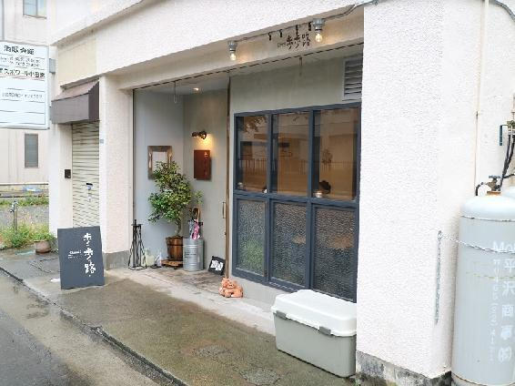
秋月「シノワって、フランス語で、『中国の』って意味だったのか......」
リカルド「どうした、急に？」
秋月「いや、今回のお店は、シノワっていう単語が店名の前に付いてるんだけど、しばらく、何だろうって思ってて......。ヌーヴェル・シノワって、新しい中華料理を意味してたのか......」
リカルド「お前って、ボジョレー・ヌーヴォーとかも、意味を気にしないタイプだろ？」
秋月「うっ......。ま、まあ、それはおいといて、今回は、築地から小田原に越してきたフランス料理みたいな中華料理店に行って来たよ」
リカルド「これは、今までの中華と趣向が変わってて、面白ぇよな。しかも、旨い」
秋月「いやぁ、良いお店が小田原に出来たよね。季節が変わる度に、メニューも変わるみたいだから、ちょいちょい訪れて、色んな旬の料理を味わいたいよね」
リカルド「というわけで、今回は小田原城近くの『Chinois 歩歩路』だな」
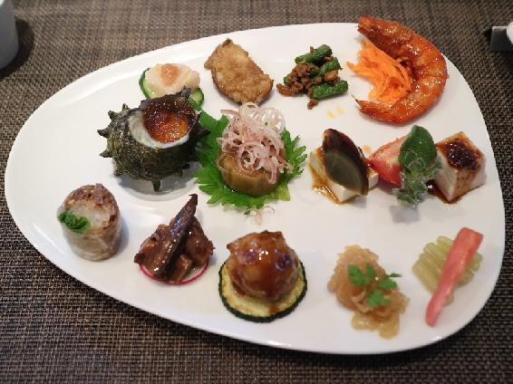
秋月「さて、このお店は、完全予約制で、基本コースの6500円と、フカヒレの上海風煮込みが入った10000円コースの二本立てだね。今回は、基本コースの6500円にしてみたよ」
リカルド「店の実力を測るには、一番高いので味を確かめてみるんじゃなかったのかよ」
秋月「フカヒレの煮込みに、あまり魅力を感じてなくて......」
リカルド「それは、旨いフカヒレ料理を食ったことが無いからじゃねぇの？」
秋月「そうかも......。それはともかく、コースは、温前菜、旬の前菜盛り合わせ、スープ、魚料理、肉料理、麺、デザート、台湾茶っていう構成だね。クロエの姉御がいないので、私が二つを選んでみたよ」
リカルド「まず、最初は、『Chinois歩歩路 旬の前菜盛り合わせ』か。こりゃ、見た目が艶やかでいいねぇ」
秋月「あまりの品数の多さに吃驚したよ。尺の関係で、総ての説明はできないね」
リカルド「上段右端の殻付き海老の甘辛炒め、中段右端のよだれ鶏、下段真ん中のイベリコ豚のミートボール、下段左端の生春巻き辺りが旨かったな」
秋月「生春巻きは和牛の頬肉の旨味に、香菜の鮮烈な薫りが相まって、美味しい。殻付き海老の味付けや、よだれ鶏の鶏肉の食感も絶妙だったね」
リカルド「確かに、これは季節毎に、旬の前菜がどう変わるのか、楽しみになるな」
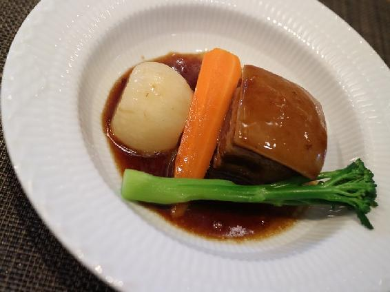
秋月「次は、肉料理の『東坡肉（トンポーロー）』だね。この豚肉の佇まい、台湾の国立故宮博物院の肉形石を思い出すね」
リカルド「肉の表面が輝いてたよな。脂身の部分がぷるっぷるで、甘味が強くて、すげぇ旨い」
秋月「肉の部分も、箸が沈むくらい柔らかくて、味が濃くて、美味しいんだよねぇ。あと、このソースも甘辛くて、コクがあって、かなり味わい深い」
リカルド「スープの『酸辣湯（サンラータン）』も、上品な味わいで、今までの酸辣湯の中で一番旨かったな」
秋月「デザートの酒粕（さけかす）のアイスクリームも白眉（はくび）だったよね。アイスの甘味の後、酒粕の甘い薫りが、口から鼻に抜けていくのに感動したね」
リカルド「しかし、お前、小田原編は、かなり値が張ってんなぁ。サヤが割烹で、クロエがフレンチで、俺も中華のコースだと、ミロやヨマが格差を感じるんじゃねぇか？」
秋月「まあ、ヨマは大丈夫だよ。彼女は、カレー至上主義だからね。......でも、ミロは怖いなぁ。変なところで、チクチク虐めて来るんだよねぇ。作者をいたぶるなんて、主人公にあるまじき行為だよ。――あ、ちなみに、ここ、オフレコで、よろしくね」
リカルド「ばっちり録音されてるけどな。まっ、次回、ミロに会う時は命を大事にしろよ」
秋月「ちょ、待って、待って！ 消して、消して！」
-The End-
■Chinois 歩歩路（シノワ プープールー）
http://pu-pu-ru.com/
神奈川県小田原市本町1-6-17 酒販会館1F
基本コース 6500円
※この物語は半フィクションであり、実在の人物や団体、出来事などと、多少関係があります。
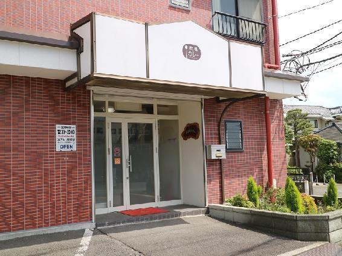
秋月「小田原のグルメ特集も、ようやく今回で終わりだね」
ヨマ「小田原は、ラーメンが不毛の地なんだけど、カレーも不毛の地なのよね。そんな中、食べログで3.5点の評価が付いているカレーのお店が一軒だけあるの。このお店が無かったら、小田原だけで、5つのエピソードを完結するっていう、今回の企画自体が成り立たなかったと言っても過言ではないわ」
秋月「そ、そこまでの話なの？」
ヨマ「探せば、喫茶店とか、定食屋とか、最近増えつつあるインド料理屋とかにも、まだ、未知の美味しいカレーが眠っているのかもしれない。でも、私の知る限り、今のところ、小田原には、ここしか残ってないの」
秋月「そもそも、忙しすぎて、開拓にも行けないから、小田原特集になった訳だしね」
ヨマ「でしょ？ という訳で、今回は、カレー不毛の地、小田原に舞い降りた最後の希望、早川にある『カレーショップ 花ライブラリー』だね！」
秋月「な、なんだか、ちょっと盛り上げすぎじゃない？」
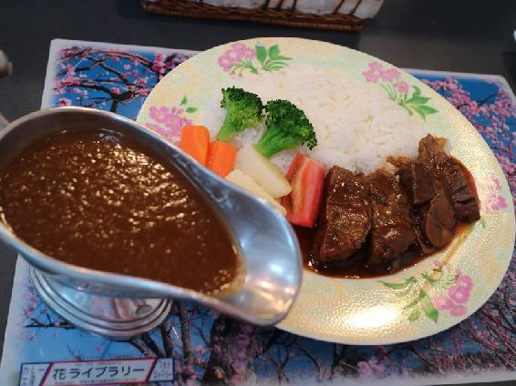
ヨマ「このお店、カレーのメニューは、二つしかないの。『ビーフカレー』と『牛肉赤ワイン煮込み ビーフカレー』の二つね。初めは、400円ほど高い『牛肉赤ワイン煮込み ビーフカレー』からだね。まず、カレーのルゥだけど、一口食べると、かなり甘味を強く感じるわ。マイルドというよりは、甘味が際立ってる感じね。店主によると、甘味の80%は玉葱で、残りはバナナなどのフルーツみたい。玉葱だけでも、一日炒めるそうで、かなり手の込んだカレーになってるの。あと、ルゥにスパイス感が、あまり感じられないけど、カレーを食べ終わると、じわっと身体から汗が噴き出してくるの。強い甘味の陰に、様々なスパイスが隠れているって感じなのかも」
秋月「この赤ワインで煮込まれた牛肉も、かなり柔らかいよね」
ヨマ「そう、そうなの。この日は、偶々（たまたま）、黒毛和牛が、いつもの和牛と同じ値段で手に入ったらしくて、『お客さん、ラッキーですね』なんて、言われちゃったよね。牛肉は、一晩、赤ワインに浸けて、その後、八時間も煮込むみたい。ホント、口に入れると、ホロホロと崩れるように蕩けちゃう。ちょっと赤ワインの渋味が気になるけど、良いお肉だったよね」
秋月「甘味の強いルゥも含めて、人によって好みが別れる欧風カレーかもしれないね」
ヨマ「あと、一日十食しか提供できないみたいだから、そこにも気をつけないとね」
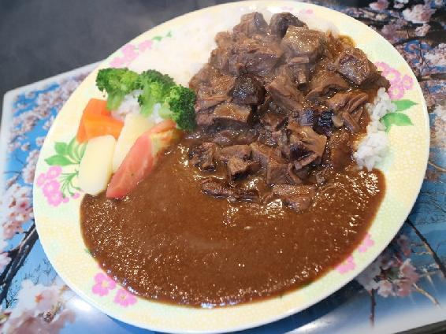
秋月「さて、お次は、『ビーフカレー』の方だね」
ヨマ「値段の安いカレーの方も気になって、再び、行ってみたんだけど......、そうしたら、こんな感じで、お肉がどっさり載ったビーフカレーが出て来たの」
秋月「大盛りをお願いしたら、肉もご飯も、いくらでも増やせるって言われて、とりあえず、200円分、増量してもらったんだよね」
ヨマ「この牛肉のボリューム感、素晴らしすぎるよ......。『牛肉赤ワイン煮込み ビーフカレー』よりも、魅力的なビジュアルかも。牛肉は、かなり柔らかく煮込まれてて、カレーと混ぜ合わせて食べると、常に牛肉の存在が感じられて、かなり美味しいの。私的には、牛肉の質は落ちても、こっちのお肉を増量した方が満足感は上かも......」
秋月「必ずしも、値段の高い方が自分の好みに合うとは限らないっていう好例だね」
ヨマ「うん。だから、必ずしも、和食の懐石や、イタリアンや中華のコース料理の方が、カレーよりも美味しいとは限らないってことだよ」
秋月「え？ あ、いや......、うーん、この場では、そういうことにしておこうかな」
ヨマ「でも、カレーの食べ歩き予算は、公平に他と同じ金額にするべきだよね！ ......あ、リョウ、逃げるな！」
-The End-
■カレーショップ 花ライブラリー
神奈川県小田原市早川1丁目1-21 早川リバーサイドマンション1F
牛肉赤ワイン煮込み ビーフカレー 1600円
ビーフカレー 肉とご飯増量 1200円 + 200円
※この物語は半フィクションであり、実在の人物や団体、出来事などと、多少関係があります。
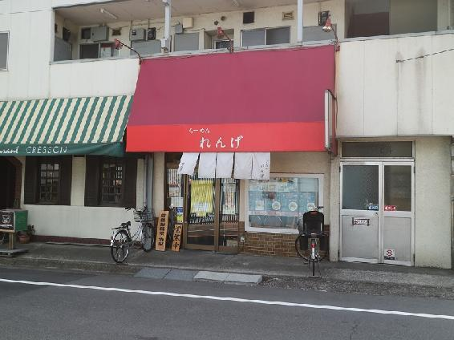
ミロ「リョウ？ あれ、リョウ？ いないの？ もしかして、ぼくから隠れてるとか？ サヤを連れてくれば、生体感知で、すぐに見つかると思うけど、いいの？」
秋月「――ど、どうか、命ばかりは、お助けを......」
ミロ「他人（ひと）を追い剥ぎみたいに言わないで欲しいな。予算の格差についてなら、別に気にしてないよ。ぼくは、ラーメンが好きだし、それに、ここで紹介していないだけで、二人で一番、よく行ってるのは、ラーメン屋だしね」
秋月「なるほど、トータルで考えれば、決して、ミロも格差を感じてないってことか」
ミロ「でも、ぼくたちに内緒で行ってる、あの店については、別だけどね」
秋月「ギクッ」
ミロ「さて、今回は、数ある鶏白湯のラーメン屋から選んだ二店目のお店だね」
秋月「ここの鶏白湯は『麺酒処 ぶらり』（Episode 035参照）のスープとは、また違った感じの味と色味、粘度に仕上がってるよね。――というわけで、今回は、東京都八王子市の『らーめん れんげ』だね」
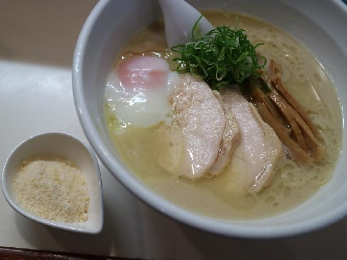
ミロ「まず、初めは『鶏白湯らーめん + 温泉玉子 + 粉チーズ』からだね。この店は、ぼくたちにとっては、かなり曰く付きの店で、計七回訪問して、三回しかラーメンを食べることができてないんだ」
秋月「そうそう。元々、八王子でTOEICの試験があったときに、初めて行ったけど、開店が11時のはずが、遅れて11時半になると言われて、泣く泣く諦めたんだ。その後、再び八王子で試験があったときに食べたのが『鶏白湯らーめん』で、今回のやつは、その後、二回続けて開店が遅延して、食べられず、五回目の訪問で、ようやく二年ぶりに食べることができたんだ」
ミロ「『鶏白湯らーめん』は、二回目だったので、ちょっと変化球で、温泉玉子と粉チーズをトッピングしてみた。まずは、そのまま、鶏白湯スープを味わったんだけど、濃厚な鶏出汁の味と、ねっとりとしたスープの舌触りがたまらない。個人的には、もう少しスープに塩味が欲しいかな」
秋月「この後、粉チーズを入れて、温泉玉子を崩すと、味がカルボナーラ風になる。チーズの塩味がスープに加わることで、味が程良い感じに仕上がるよね」
ミロ「続いて、極細麺の塩ダレの替え玉を追加注文して、スープに浸けて食べると、さらにスープの塩味が増して、もっとぼく好みの味になる」
秋月「味の変化が、三回も楽しめる面白い鶏白湯ラーメンだったね」
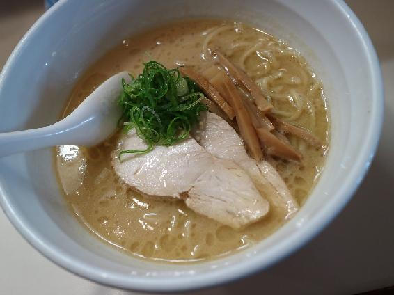
ミロ「続いては『鶏白湯醤油らーめん』だね。」
秋月「結局、六回目の訪問で、開店時間が11時半に変わったことを知って、もうTOEICの受験の時には、食べられないことが確定してしまった......。なので、Siftedの三話目のためだけに、八王子まで遠征することになったんだ」
ミロ「でも、わざわざ、遠征した甲斐はあったよね。鶏白湯醤油は、少し強めの醤油の味が、個人的な塩味不足を補っていて、スープの味としては、良い仕上がりになっている。このスープの濃厚さと舌触りは、病み付きになってしまいそうだよ」
秋月「八王子には、他にも美味しそうなラーメン屋が幾つかあるから、そこに行くときに、また立ち寄りたいよね」
ミロ「それって、まさかの連食宣言なの？」
秋月「迷うくらいなら、喰いたい物を全部喰えっていう名言があるじゃない？」
ミロ「どこの愚か者が、そんな迷言を作ったんだっけ？」
秋月「......ここの愚か者たちです」
ミロ「ぼくを仲間に引き込んでも、リョウだけが太るという事実は変わらないけど？」
秋月「き、厳しい......」
-The End-
■らーめん れんげ
東京都八王子市子安町3丁目7-13 中西ビル1F
鶏白湯らーめん + 温泉玉子 + 粉チーズ 830円
鶏白湯醤油らーめん 700円
※この物語は半フィクションであり、実在の人物や団体、出来事などと、多少関係があります。
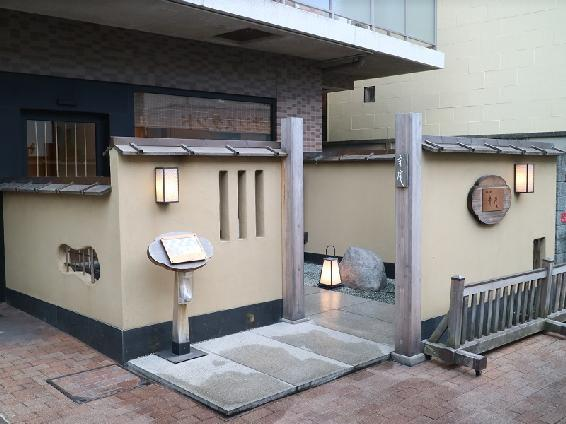
秋月「先生、つ、ついに、この時がやって参りました」
サヤ「わたし、先生じゃないけど......」
秋月「ミロ先生の了解も得られたので、これからは安心して色々行くことができるけど、まず、その先陣を切るのが、このお店だね」
サヤ「あのね、リョウ......、読者の人たちが、置いてけぼりになってると思うよ」
秋月「あ、ああ、そうだった。今回、初のミシュラン三つ星のお店に行って来ました」
サヤ「二つ星を飛ばして、いきなり三つ星デビューしてきちゃったよね」
秋月「色々と迷ったけど、やはり一度は、三つ星のお店に行ってみたくて、一番、行きやすそうな店から行ってみることにしたんだ」
サヤ「予約の電話をするときから、変な緊張感が漂ってたよね。こんな庶民が気軽に行ってもいいのかなって」
秋月「数カ月待ちとかだったら、どうしよう......とか思ってたけど、意外とあっさり予約ができてしまった」
サヤ「神社巡りとか、スピリチュアル思考とか、リカルドの『ジンクス』効果とかで、身についた幸運が無意識のうちに発動されたのかも？」
秋月「――というわけで、今回は、神奈川県藤沢市にある『日本料理 幸庵』だね」
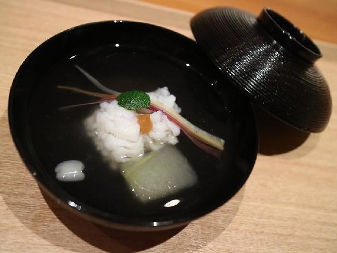
サヤ「えっと、このお店、夕食は、基本的に『コース料理 13,200円』しかなくて、『おまかせ』だと、値段は24000円から時価になるみたい」
秋月「庶民には、時価は怖いので、『コース料理 13,200円』してみました。コースの構成は、先付け、椀物、造り、焼き物、八寸、焚合せ、食事、お菓子、水菓子といった感じで、揚げ物や酢の物は含まれないみたいだね」
サヤ「まず最初は、椀物からだね。『鱧（はも）と冬瓜（とうがん）』の椀かな。七月に伺ったので、七夕の短冊をイメージした三色の人参が添えてあるの。手前に浮いている白い小さなものは、鱧の浮き袋なんだって」
秋月「このお出汁は上品な味で、美味しいね。山口県産の鱧は、きちんと骨切りされていて、ふわふわで食感も柔らかい。鱧は、やや身の旨味や甘味が弱めだったのが、惜しかったかな。個体差もあるかもだけど、人生最高の鱧には、ちょっと及ばなかった感じだね」
サヤ「実は、緊張で、味がよく判らなかっただけとか......？」
秋月「そ、それは、ありうる......」
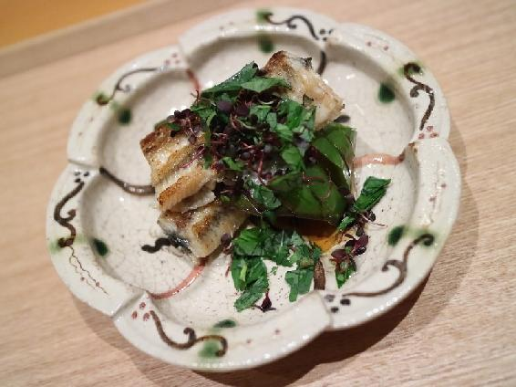
サヤ「さて、次は、焼き物の『鰻（うなぎ）の酒塩焼き』だね」
秋月「蓼（たで）の下に隠れている緑色のものは、翡翠茄子（ひすいなす）だね」
サヤ「鰻は身に弾力があって、焼いたというよりは蒸したような食感だったかな。酒塩焼きの鰻は、噛むと甘い脂がじゅわっと出て来て、蒲焼きとは、また違った味わいが楽しめるよね」
秋月「あと、茄子を素揚げした翡翠茄子が異様に美味しく感じられて、鰻と合わせて食べると、ちょっと幸せな気持ちになれるね」
サヤ「そういえば、車麩（くるまぶ）の素揚げが載った『冷やし善哉（ぜんざい）』も美味しかったよね」
秋月「これで、ようやくミシュラン三つ星のお店が、どんな感じか少し解ったかも」
サヤ「外国人に総て英語で説明してるあたり、ホスピタリティの凄さも垣間見たよね」
秋月「あんな風にもてなされると、最初は緊張してても、気持ちが和らぐかもね」
サヤ「リョウの場合、高級なお店で緊張しないように場数を踏んでおく方がいいかも？」
秋月「うっ......、でも、いつか、そんな夢みたいなことができるようになると良いなぁ」
サヤ「でも、『名前を言ってはいけないあの店』には、よく行ってるんだよね？」
秋月「あれは疲れ切った魂を癒すために......、サヤも大人になったら、解るよ......」
サヤ「なんだか意味深だね......、わたし、大人になりたくなくなっちゃうかも」
秋月「私みたいに、子供みたいな大人になれば、少しはマシかも？」
サヤ「それ、恥ずかしげも無く言っちゃうの？」
-The End-
■日本料理 幸庵
http://www.kouan.info/
神奈川県藤沢市鵠沼花沢町2-8 ルート鵠沼1F
コース料理 13,200円 13200円
※この物語は半フィクションであり、実在の人物や団体、出来事などと、
多少関係があります。
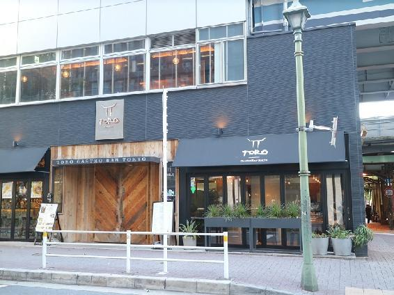
秋月「さて、今回は、記録を取り始めてから、二度目のメキシコ料理だね。そういえば、十年以上前に、家の近所にメキシコ料理店があって、一回だけ行った記憶があるけど、何を食べたのか全く思い出せないな。そのお店も、すぐに閉店してしまったしね......」
クロエ「記録に残ってる一回目は、いつなんだ？」
秋月「2009年12月3日に、ミュンヘンのメキシコ料理店で、三種類のタコスを食べているみたいだね」
クロエ「みたいだねって――もう、記憶も定かじゃないってことか」
秋月「流石に、九年前だと、ほとんど覚えてないね。記録を確認して、自分がメキシコ料理を食べていたことに驚いたくらいだよ」
クロエ「それで、今回は、どういう風の吹き回しで、メキシコ料理を選んだんだ？」
秋月「偶（たま）には、違った国の料理を食べるのもいいかと思ってね」
クロエ「――という訳で、今回は、東京の銀座にある『TORO Gastro Bar Tokyo』だね」
秋月「いざ、メキシコへ！」
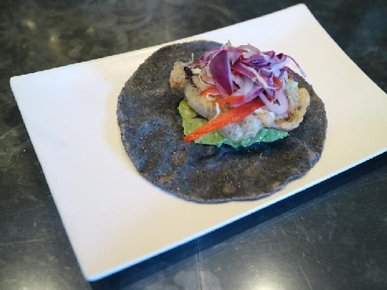
クロエ「最初は『ブルートルティーヤのソフトシェルクラブとアボカドのタコス』だね」
秋月「ネットの情報によると、このトルティーヤは、青いトウモロコシを使ってるから、こんな風に少し青黒い色合いをした生地になってるみたいだね」
クロエ「トルティーヤは薄いけど、ややもちっとしていて、食感が良いね。ソフトシェルクラブは、揚げてあるから、表面がパリパリで、やや濃いめの蟹の味と揚げ油の味が相まって、美味しいな」
秋月「トルティーヤで包み込むようにして、ソフトシェルクラブをまとめて頬張ると、もちもちとパリパリとした食感の一体感が楽しめるね」
クロエ「ソフトシェルクラブの味が強めのせいか、アボカドの味や風味は、少し弱く感じられたかな」
秋月「あと、予想よりも小ぶりだったから、もう一つくらい食べられたかもね」
クロエ「『ブルートルティーヤのスパイシービーフタコス モーレソース』も、気になってたんだよなぁ。こっちの方が一番人気だったみたいだしね」
秋月「初めてのお店は分量が判らないから、どうしても少し控え目になるんだよね。お米一粒も残さないように食べるという教育が染み付いてて......」
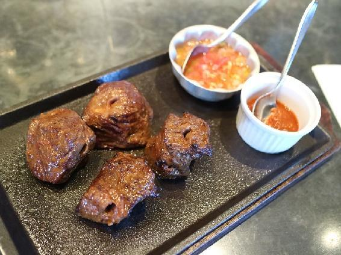
クロエ「さて、お次は、『スパイシービーフ（ハラミ） 200g』だね。こちらは、牛肉を鉄串に刺して焼いて、その後、鉄板の上に移される」
秋月「牛肉は、ドライエイジングで、長期間熟成してあるみたい。余分な水分を飛ばして、肉の旨味を凝縮させてあるせいか、柔らかく焼かれた肉自体に味があって、美味しいね」
クロエ「写真の奥に見えるトマトを使ったソースに肉を漬けて食べると、柔らかい酸味に牛肉の味が合わさって、さらに美味しくなるね。反対に、手前のホットチリソースの方は、それほど辛味は強くないけど、なんとなく牛肉の味を弱めて、チリソースの味だけが残る感じがあったな」
秋月「トマトソースの方をたっぷり載せて、チリソースをアクセントにつける感じが、一番良い組み合わせかもしれないね」
クロエ「肉の味としては、『Nantona』の『熟成サーロイン』（Episode 037参照）や『CUBA LiBRE』の『CHURRASCO A LA CUBANA』（Episode 042参照）の方が、もう少し旨味が濃かったような気もするね」
秋月「肉も魚も熟成は奥が深そうだし、もっと美味しくできるのかもしれない」
クロエ「そう言うあんたも、もっと熟成して良いレビューが書けるようにならないとね」
秋月「うっ......、だ、大丈夫だよ。時間を掛けて、少しずつ熟成してるから」
クロエ「気が付いたら、部屋で腐敗や乾燥してなきゃいいけどね」
秋月「......クロエ、それって、密かに私の孤独死の話にすり替わってない？」
-The End-
■TORO Gastro Bar Tokyo
https://torogastrobar.jp/
東京都中央区銀座6-2先 銀座コリドー街
ブルートルティーヤのソフトシェルクラブとアボカドのタコス 500円
スパイシービーフ（ハラミ） 200g 2000円
※この物語は半フィクションであり、実在の人物や団体、出来事などと、多少関係があります。
***
（ 本書は、 The BBB: Breakthrough Bandwagon Books のために書き下ろされたオリジナル作品です ）